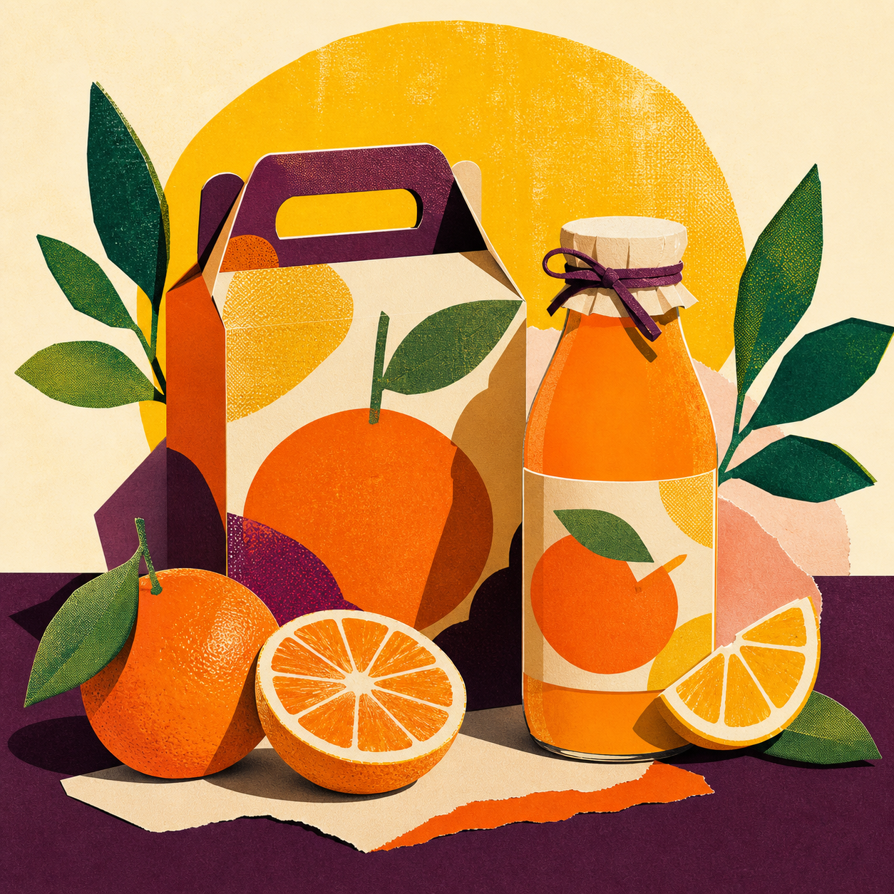
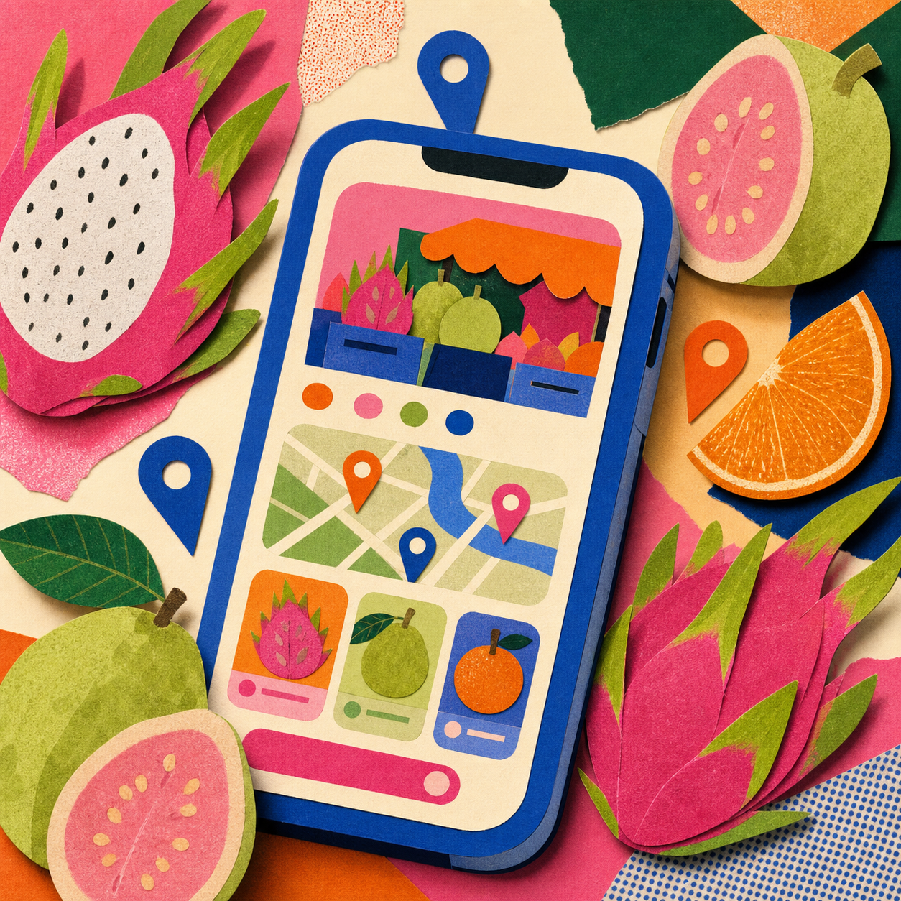

日日橙光
替一瓶每天都想喝的果汁，打造有陽光、有溫度，也能從貨架上跳出來的品牌形象。

THE CHALLENGE
讓「天然」不再只有一種長相。
市場上的天然果汁多以淺綠與留白傳達健康，卻容易失去個性。這次我用飽和橙色、深紫與紙張質感，建立更年輕、直接的溝通方式。
視覺核心來自水果切面與市場紙袋，圓形系統能自由延伸到瓶標、外帶盒與社群內容。

替一瓶每天都想喝的果汁，打造有陽光、有溫度，也能從貨架上跳出來的品牌形象。

市場上的天然果汁多以淺綠與留白傳達健康，卻容易失去個性。這次我用飽和橙色、深紫與紙張質感，建立更年輕、直接的溝通方式。
視覺核心來自水果切面與市場紙袋，圓形系統能自由延伸到瓶標、外帶盒與社群內容。
